Mi biblioteca
Mundos, personajes y aventuras que ya forman parte de mis estanterías.
📚 79 libros leídos • ✨ 12 sagas recorridas
✍️ = Tiene reseña disponible
✨ Fantasía
Mundos mágicos, criaturas fantásticas y aventuras imposibles.
 (1).jpg)
Harry Potter
J. K. Rowling
 (1).jpg "⭐ Mi saga favorita ⭐")
Percy Jackson
Rick Riordan
.jpg)
El señor de los anillos
J. R. R. Tolkien
.jpg)
Héroes del Olimpo
Rick Riordan
.jpg)
Ciudad de hueso
Cassandra Clare
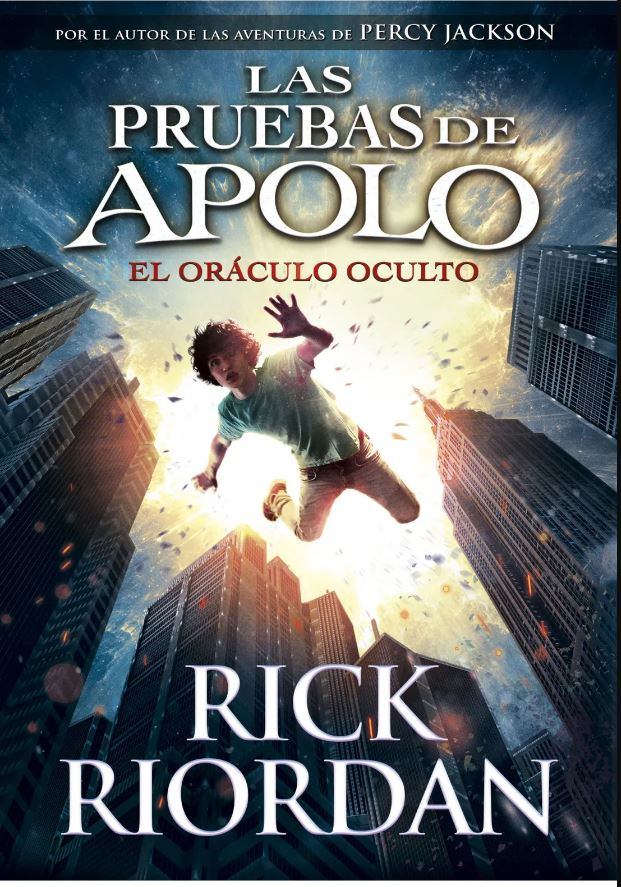
Las pruebas de Apolo
Rick Riordan
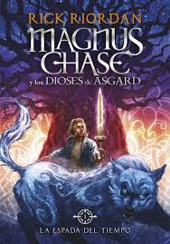
Magnus Chase
Rick Riordan
Lady Midnight
Cassandra Clare
Furyborn
Claire Legrand
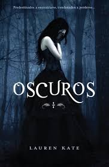
Oscuros
Lauren Kate
Ciudad medialuna
Sarah J. Maas
Matar un reino
Alexandra Christo
Magos y semidioses
Rick Riordan
⚔️ Aventura y ciencia ficción
Viajes, supervivencia y desafíos que cambian destinos.

Maze Runner
James Dashner
Los 100
Kass Morgan
Resident Evil
S. D. Perry
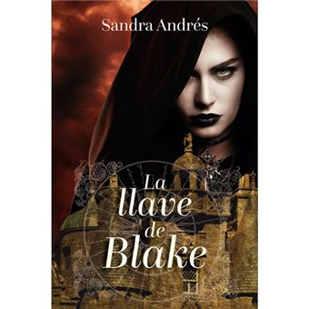
La llave de Blake
Andrés Belenguer
👻 Terror y suspenso
Secretos, investigaciones y giros inesperados.
La chica invisible
Blue Jeans

It
Stephen King
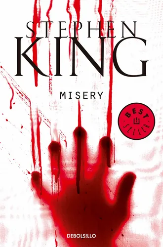
Misery
Stephen King
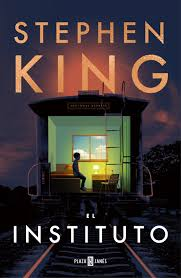
El instituto
Stephen King
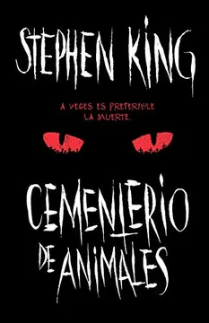
Cementerio de animales
Stephen King

Amigo imaginario
Stephen Chbosky
❤️ Romance y juvenil
Historias sobre amor, amistad y crecimiento personal.

A dos metros de ti
Rachael Lippincott
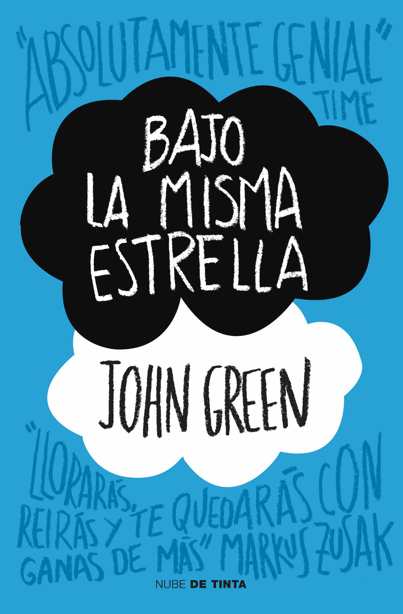
Bajo la misma estrella
John Green
Todo, todo
Nicola Yoon
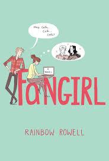
Fangirl
Rainbow Rowell

Violet y Finch
Jennifer Niven
Llámame por tu nombre
André Aciman
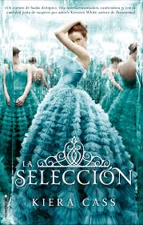
La selección
Kiera Cass
💭 Clásicos y reflexivos
Libros que dejan enseñanzas y acompañan durante años.

El Principito
Antoine de Saint-Exupéry
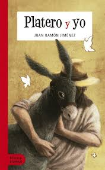
Platero y yo
Juan Ramón Jiménez
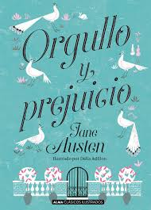
Orgullo y prejuicio
Jane Austen
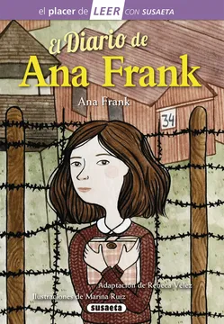
El diario de Ana Frank
Ana Frank